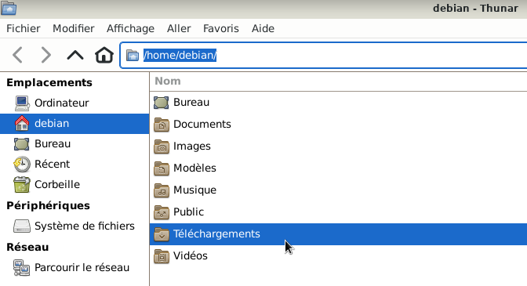
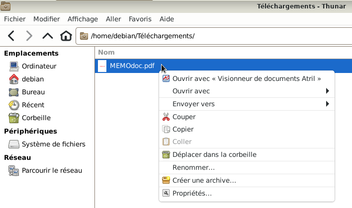
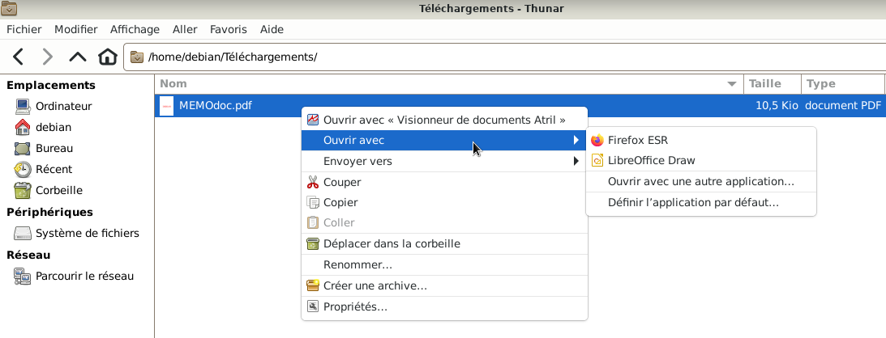
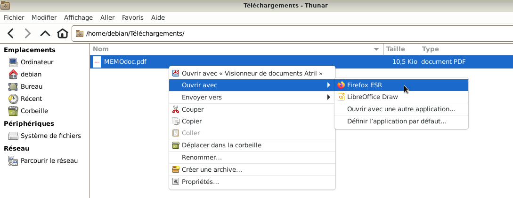
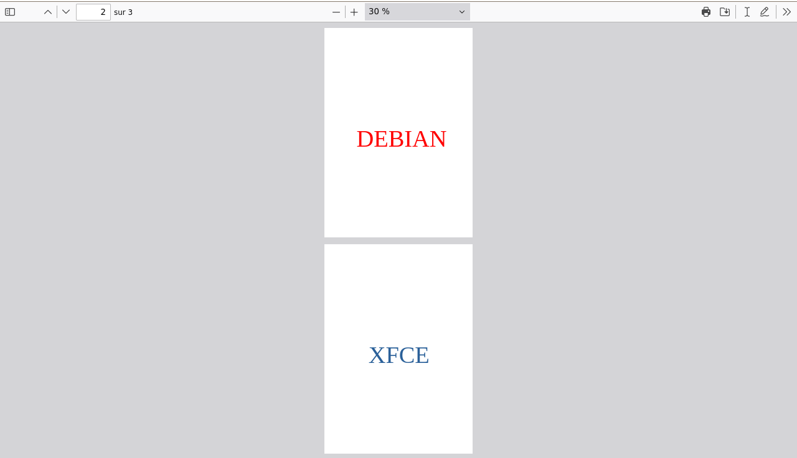

&
Visionner un document PDF avec Firefox : Le site Mozilla / Firefox
Le navigateur Firefox est installé par défaut sur Debian avec le bureau Xfce
La version installée est la version : Firefox ESR (Extended Support Release), plus d'information
ici.
Qu'est ce qu'un navigateur web?
Le navigateur Firefox dispose d’une visionneuse PDF intégrée qui permet l’affichage des fichiers au format PDF.
Certains fichiers PDF contiennent des champs à remplir. Avec la visionneuse PDF intégrée à Firefox, il est possible de
remplir des champs textuels, cocher des cases etc...
La page officielle :
Voir les fichiers pdf Firefox






Nota : Si une application n'a pas été définie par défaut pour ouvrir un document PDF,
alors à ce stade, l'application par défaut qui ouvrira les documents PDF, en utilisant le double clic,
sera l'application Firefox et non plus le visionneur de document Atril.
Pour définir une application par défaut se rendre au chapitre :
Gestionnaire de fichiers avec Thunar :
Définir l'application par défaut par l'utilisateur
Pour plus d'informations, se rendre sur la doc.Ubuntu qui traite de la gestion des fichiers de type PDF.

Informations sur le logiciel libre et Merci.
Marques déposées :
Ce site ne fait pas partie de Debian, n'est pas produit par le projet
Debian, ni approuvé par le projet Debian.
Ce site n'est pas affilié à Debian. Debian est une marque déposée appartenant
à Software in the Public Interest, Inc.
Contribuer :
Ce site ne fait pas partie de XFCE, n'est pas produit par le projet
XFCE, ni approuvé par le projet XFCE.
Ce site n'est pas affilié à XFCE.
Ce site est juste réalisé par un passionné.